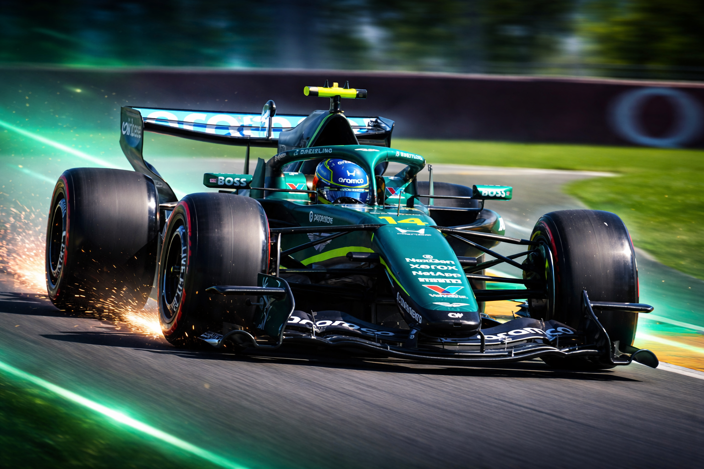
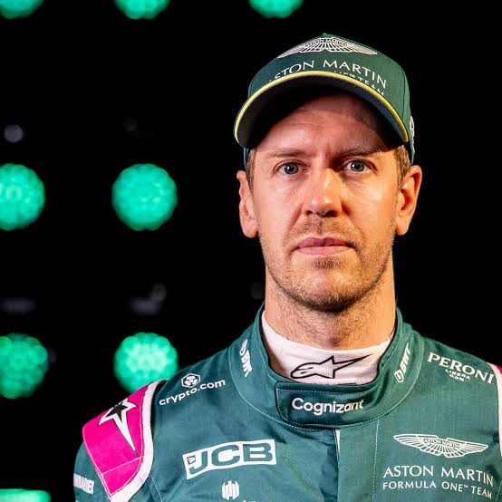

01

1991 — 2005
JORDAN
THE BEGINNING↗
Carregando notícias...
ASTON MARTIN ARAMCO FORMULA ONE TEAM
Conheça a dupla que representa a Aston Martin na Formula 1.
A Aston Martin é uma das marcas mais tradicionais do automobilismo britânico e carrega décadas de história dentro e fora das pistas. Na Fórmula 1, a equipe representa luxo, tecnologia e performance em uma das categorias mais competitivas do mundo.
A atual fase da equipe começou após a transformação da Racing Point em Aston Martin F1 Team em 2021. Com investimentos pesados, nova fábrica em Silverstone e grandes nomes da engenharia, a equipe passou a buscar espaço entre as principais forças do grid.
Liderada por Lawrence Stroll e contando com pilotos experientes como Fernando Alonso, a Aston Martin vive uma era de reconstrução ambiciosa. O objetivo da equipe é claro: transformar potencial em vitórias e disputar campeonatos no futuro da Fórmula 1.

A Aston Martin representa tradição britânica, luxo e inovação dentro da Fórmula 1. Após retornar oficialmente ao grid em 2021, a equipe iniciou uma nova era focada em crescimento, tecnologia e ambição de lutar pelas primeiras posições do campeonato.
Com investimentos massivos em infraestrutura, simuladores e engenharia, a Aston Martin busca se consolidar como uma das grandes forças da Fórmula 1 moderna. Cada detalhe da equipe é pensado para maximizar desempenho e eficiência.
A Aston Martin leva para a Fórmula 1 a tradição do automobilismo britânico, combinando elegância, engenharia avançada e espírito competitivo.
A equipe trabalha constantemente para reduzir a distância para as equipes de ponta e construir um futuro capaz de disputar vitórias e títulos.
A Aston Martin investe em inovação, aerodinâmica e desenvolvimento técnico para acompanhar a evolução da Fórmula 1 moderna.
A Aston Martin simboliza luxo, tecnologia e ambição competitiva. Sua missão é transformar tradição em resultados e construir uma nova era de sucesso na Fórmula 1.
Em Silverstone, no Reino Unido, está localizada a moderna sede da Aston Martin. A fábrica representa uma nova era para a equipe, equipada com tecnologia de ponta e infraestrutura voltada para competir no mais alto nível da Fórmula 1.
A estrutura reúne departamentos de aerodinâmica, performance e desenvolvimento técnico em um ambiente projetado para acelerar a evolução da equipe dentro do grid.
A Aston Martin construiu uma das fábricas mais modernas da Fórmula 1, focada em eficiência, inovação e desenvolvimento de performance.
A equipe investe fortemente em simuladores, aerodinâmica e tecnologia para evoluir constantemente dentro do campeonato.
A Aston Martin busca construir uma equipe capaz de disputar vitórias regularmente e se tornar uma referência da Fórmula 1 moderna.
“Performance nasce da inovação.”
Em Silverstone, tecnologia e ambição trabalham juntas para construir o futuro da Aston Martin na Fórmula 1.
Das origens à atual Aston Martin na Fórmula 1.


| 🏎️ Chassi Atual | AMR26 |
| ⚙️ Motor Atual | Honda |
| 📅 Fundação | 2021 |
| 📍 Sede | Silverstone – Inglaterra |
| 🥇 Primeiro podio | Sebastian Vettel 🇩🇪 – 2021 |
| 🏆 Melhor Resultado | Fernando Alonso 🇪🇦 – 2° 2023 |
| 🔥 Melhor Temporada | 2023 – 8 podios |
| 👬 Dupla Atual | Alonso 🇪🇦 Stroll 🇨🇦 |
Posição campeonato
Pontos
Pódios
Vitórias
Top 5
Avg Grid
| Etapa | GP | Alonso | Stroll |
|---|
ASTON MARTIN 2026
Aston Martin
Formula 1 championship points evolution

Responsável pela direção executiva e comercial da equipe.

Chefe de equipe responsável pelas decisões esportivas e estratégicas.

Lidera o desenvolvimento aerodinâmico do carro.

Cordena as estrategias da equipes durante as corridas.
Lidera o desenvolvimento aerodinâmico do carro.
Coordena o design e engenharia estrutural do carro.

Cordena toda engenharia da equipe.

Responsável por cuidar das configurações dos carros.
A Aston Martin combina tradição, inovação e tecnologia de ponta para evoluir constantemente na Fórmula 1. Cada setor da equipe trabalha em conjunto para transformar engenharia, estratégia e desenvolvimento em performance nas pistas.
Representam a equipe nas pistas e trabalham ao lado dos engenheiros para extrair o máximo desempenho do carro.
A Aston Martin investe no desenvolvimento de jovens talentos para construir o futuro da equipe na Fórmula 1.
Analisa pneus, equilíbrio e ritmo de corrida para otimizar o carro em diferentes condições.
Coordena ajustes e decisões estratégicas durante cada fim de semana de GP.
Desenvolve soluções para melhorar downforce, estabilidade e eficiência nas curvas e retas.
Responsáveis pela montagem dos carros, manutenção e execução dos pit stops.
Analisa cenários de corrida, safety cars e desgaste de pneus para definir as melhores decisões.
Monitora milhares de informações em tempo real para analisar comportamento e performance do carro.
Busca novas soluções técnicas para aproximar a equipe das líderes do grid.
Sistemas avançados ajudam na análise de dados, simuladores e desenvolvimento do carro.
Coordena o transporte de carros, peças e equipamentos ao redor do mundo durante toda a temporada.
Fortalece a identidade da Aston Martin e aproxima a equipe dos fãs globalmente.
Em Silverstone, engenharia, inovação e desenvolvimento trabalham juntos para criar cada novo carro da Aston Martin. O processo envolve simulações avançadas, estudos aerodinâmicos e evolução constante em busca de desempenho máximo na Fórmula 1.
O desenvolvimento começa com estudos aerodinâmicos e análise de performance para encontrar equilíbrio e eficiência.
Engenheiros utilizam softwares avançados para criar modelos virtuais e testar diferentes soluções.
A equipe ajusta a aerodinâmica para melhorar downforce, estabilidade e velocidade.
Materiais leves e resistentes são usados para garantir segurança e máxima performance.
Pilotos e engenheiros trabalham juntos ajustando comportamento e dirigibilidade do carro.
Durante toda a temporada, novas atualizações são desenvolvidas para buscar ganhos de desempenho.
“Na Aston Martin, cada detalhe é desenvolvido para transformar tradição em velocidade.”

🏁 Corridas
🥇 Top 10
🥇 q3
⚡ podio
📈 Pontos no Total
Liderou a Force India e conquistou a primeira vitória da Racing Point na Fórmula 1.

Conquistou o primeiro pódio da Aston Martin em seu retorno à Fórmula 1.
Levou a Aston Martin de volta ao topo do grid com vários pódios em 2023.
Foi peça importante no crescimento competitivo da Force India durante os anos 2010.
Participou da reconstrução da equipe desde a era Racing Point até Aston Martin.